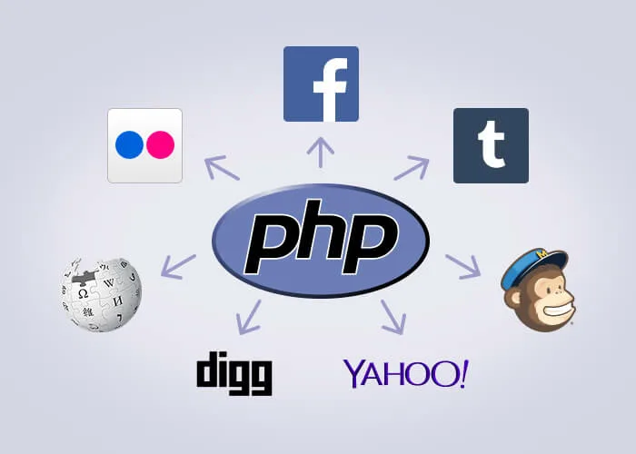

PHP
PHP — интерпретируемый скриптовый язык программирования общего назначения. Название представляет собой рекурсивный акроним PHP: Hypertext Preprocessor (PHP: предварительный обработчик гипертекста), но изначально оно расшифровывалось как Personal Home Page Tools (Инструменты для создания персональных веб-страниц).
PHP используется в различных сферах, например:
Лендинги и блоги. Позволяет создавать контент и управлять им: публиковать и редактировать статьи, изображения и комментарии.
Интернет-магазины, онлайн-платформы для продажи товаров и услуг. PHP позволяет добавлять товары в корзину, оформлять заказы и обрабатывать платежи.
Социальные сети.Язык отвечает за авторизацию, обмен сообщениями, создание профилей и управление контентом пользователей.
Веб-приложения. Например, для CRM-системы с помощью PHP можно создать виджет для добавления контакта пользователя.
Системы управления контентом.На PHP написаны многие системы управления контентом (CMS), например Drupal, WordPress, Joomla.
API и веб-сервисы. PHP используется для создания API и веб-сервисов, позволяющих взаимодействовать с приложениями и данными через интернет.
Обработка изображений и мультимедиа. Язык может использоваться для обработки изображений, аудио- и видеофайлов на сервере.
Администрирование серверов. Некоторые системные инструменты и веб-панели для управления серверами также работают на PHP.
